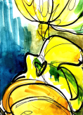
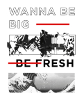
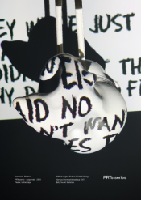
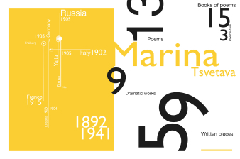
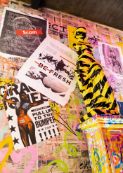
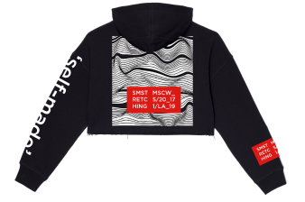

Unfortunately, this website doesn’t work on mobile devises. Check out the computer version, so you can get a full experience of interaction and design. See you there!
Work space
Info
Hi, there! Drag something from left colum to careate your artwork

Interaction



Multi layered
Deliberate


Socially engaging
Provocative
Organized
Ambiguous



Modernism era started with the last two decades of the nineteenth century as a result of enlightening and radical change in the commercial industry. As the ideological movement it originated with the rejection of all the previously stated beliefs about traditional forms of art, literature, religious faith, philosophy, and social organization. By the 1970s the ‘modern era was drawing to close’ because it was ‘no longer relevant in an immerging postindustrial society’ and due to emerging of new era of postmodernism in history of art. (Meggs, 1998)
However, the modernists’ approach to work hasn’t been ignored by the practitioners of the field completely. Moreover, according to “The Cambridge Companion to Modernism” the “understanding of a major cultural episode” has been changing and updating over the recent years with the accruing of ‘more ambitious acts of contextualization’. Nowadays, we might have more Modernism, as well as more flexible way to understanding and interpreting it. Thus, the overarching theory I wanted to put forward in this work is the idea of how the modernism approach is still used in various projects, for instance, the web design and UX design practices.
Click the button to save your artwork